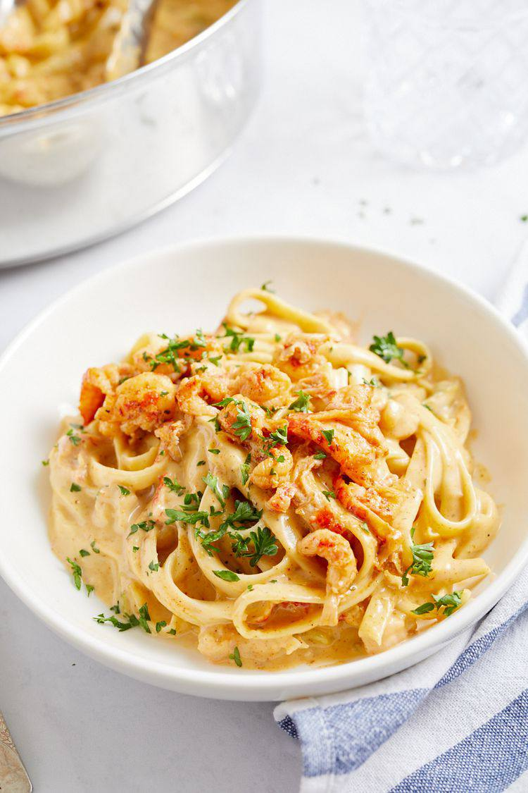

Cajun Shrimp Alfredo

Description
This incredibly creamy Cajun shrimp Alfredo recipe has just the right amount of spice. It's packed with flavor and ready in just over 30 minutes.
Ingredients
- ounces uncooked fettuccine pasta≤≤
- 1 pound medium peeled, deveined raw shrimp
- 2 teaspoons Cajun seasoning
- 2 tablespoons olive oil
- 1 cup finely chopped yellow onion (from 1 onion)
- 1/2 cup finely chopped celery (from 1 stalk)
- 2 garlic cloves, minced
- 1/3 cup chicken stock
- 1 cup heavy cream
- 4 ounces Parmesan cheese, grated (about 1 cup)
- 1 teaspoon coarsely ground black pepper
- 1 teaspoon kosher salt
- 1/4 teaspoon cayenne pepper
- 1/3 cup sliced scallions, for garnish
Steps
- Cook pasta according to package directions. Drain and set aside.
- Toss together the shrimp and Cajun seasoning in a medium bowl to coat.
Add the oil to a large skillet over medium-high heat. Tilt to coat the skillet. Add the shrimp to the skillet and cook until opaque, about 2 minutes per side. Transfer the shrimp to a plate.
- Add the onion, celery, and garlic to the skillet and cook, stirring often, until the onion is tender, about 3 minutes.
Add the chicken stock and stir to loosen the browned bits from the bottom of the skillet. Stir in the heavy cream, Parmesan, pepper, salt, and cayenne. Cook, stirring often, until thickened, 4 to 5 minutes.
- Add the cooked, drained pasta and toss to coat. Top with the shrimp and sprinkle with scallions. Serve immediately.